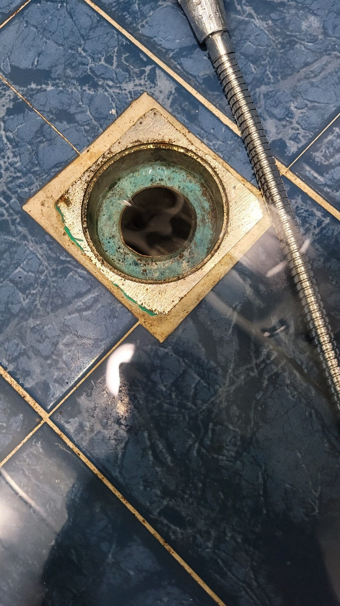
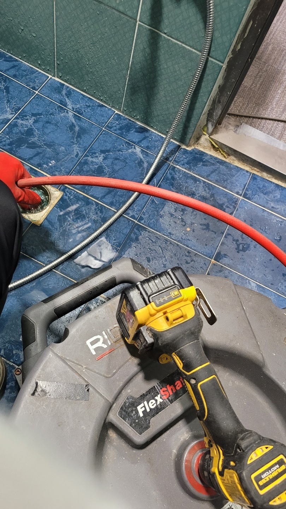

🏠 수원 인계동 씽크대막힘 우만동 주방배수구역류 뚫는곳 설비업체
수원 우만동 싱크대막힘 전문 시공 후기

📋 작업 개요
- 위치: 수원 우만동, 우만동, 수원
- 서비스 유형: 싱크대막힘, 하수구막힘, 배관막힘, 역류해결, 뚫는업체
- 작업 일시: 2024. 3. 1. 23:36
- 업체명: 하수구수사대 (010-5615-2118)
🔍 문제 상황
안녕하세요. 하수구수사대입니다.
우리는 평소에 공기의 존재를 눈으로 볼 수는 없지만 중요성을 인식을 하면서 살아가고 있습니다. 이와 비슷한 것이 바로 생활 속에서 볼 수 있는 배관설비인데요. 이렇게 우리 주변에는 눈에 보이지 않아서 평소에는 잘 모르고 지내는 것들이 갑자기 사라지거나 막힘으로 인해 사용을 할 수 없게 될 때는 큰 불편함이 생기게 될 수밖에 없는 것입니다.
생활수를 배출을 하고 있는 배관 같은 경우에는 막힘이 발생하기 전까지 신경을 쓰지 못하는 경우가 많이 있는데요. 이러한 배관 막힘은 언제 어디서든 누구에게나 발생을 할 수 있는 만큼 주의가 필요하다고 할 수 있습니다.
그래서 오늘은 팔달구 하수구막힘역류 우만동 인계동 하수구설비 해결 현장을 통해서 배관 막힘이 발생을 하게 되면 어떻게 해결을 해야 할지에 대해서 알려드리는 시간을 가져보도록 하겠습니다.

🔎 원인 분석
💡 전문가 진단: 우리 주변 모든 건물들에는 배관 시스템들이 설치가 되어 있습니다.
우리 주변 모든 건물들에는 배관 시스템들이 설치가 되어 있습니다.
하지만 배관설비들은 땅에 묻혀있거나 눈에 보이지 않게 설치가 되어 있기 때문에 평소에는 신경을 쓰지 않고 잊어버리게 되는 경우가 대부분입니다. 배관 막힘이 발생을 하게 되면 여러 가지로 많은 불편함이 생길 수밖에 없습니다.
그러므로 미리미리 정기적으로 전문 업체를 통한 점검을 통해서 관리를 해주시는 것이 이러한 갑작스러운 막힘을 예방할 수 있게 되는 것입니다. 특히 많은 사람들이 사용을 하게 되는 건물 같은 경우에는 배관 막힘의 발생 위험이 높기 때문에 배수관의 관리를 더 정기적으로 해주어야 하는 것입니다.
이번에 방문한 팔달구 하수구막힘역류 우만동 인계동 하수구설비 현장은
여러 세대가 모여있는 한 가정에서 하수구 막힘이 발생을 해서 방문을 하게 된 곳이었습니다. 가정에서 이렇게 하수구가 막히게 되는 경우도 언제든지 발생을 할 수 있는 만큼 이에 대한 대비가 필요하다고 할 수 있는데요.

🔧 작업 과정
우리 생활 주변의 배관 중에서 싱크대나 화장실 같은 경우는 단 몇 시간만 막혀도 큰 불편함을 겪을 수밖에 없습니다. 또한 싱크대 같은 경우에는 매일 음식을 하는 곳이다 보니 아무래도 배관 막힘이 자주 발생하게 될 수밖에 없는데요.
이럴 때는 당황스러워하지 마시고 혼자서 해결 하지 않고 전문가를 통해서 해결을 하시는 것이 필요합니다. 의뢰를 받고 현장에 도착을 한 저희는 막힘이 발생한 하수구 쪽의 배관을 먼저 살펴보았습니다. 배관의 내부는 육안으로 볼 수 없기 때문에 반드시 배관 내시경을 이용해서 내부의 상태를 파악하는 것이 필요하다고 할 수 있습니다.
배관 내부의 상황을 확인을 하기 위해서는
배관 내시경을 이용해서 본격적인 작업을 하였는데요 배관 내부 같은 경우는 육안으로는 확인을 할 수 없기 때문에 원인을 파악하기 위한 내시경 작업은 필수라고 할 수 있습니다. 내시경으로 내부를 살펴보니 배수관 속에는 오래된 음식물 덩어리들과 기름때 찌꺼기들로 인해서 막혀있는 것을 볼 수 있었습니다.
이렇게 배관을 막고 있는 이물질 덩어리들 같은 경우는 완전히 제거를 하지 않게 되면 또다시 배관을 막게 될 수 있는 것입니다. 본격적으로 팔달구 하수구막힘역류 우만동 인계동 하수구설비 해결을 하기 위해서 작업을 시작하였는데요.
이물질을 제거하기에 적합한 전문 장비를 이용해서 이물질들을 모두 제거하는 작업을 하였습니다. 내시경으로 내부를 확인하면서 진행을 하기 때문에 확실한 해결뿐만 아니라 배관 관리까지 해줄 수 있습니다.
이렇게 빠른 해결을 통해서


✅ 작업 완료
배관 막힘을 모두 해결을 하였습니다.
경기도 수원시 팔달구 효원로249번길 46-15 5층 71호




⚠️ 주방 싱크대 배관 막힘 예방 수칙
- ✅ 기름기가 묻은 식기나 프라이팬은 설거지 전 키친타올로 반드시 기름때를 닦아내세요.
- ✅ 주기적으로 싱크대 개수대에 뜨거운 물을 가득 받아 한 번에 내려 배관 내부 기름을 씻어내세요.
- ✅ 배수구 거름망을 미세한 필터로 사용하시고 음식물 찌꺼기가 틈으로 새어 들지 않게 관리하세요.
- ✅ 베이킹소다와 식초를 뜨거운 물과 함께 일주일에 한 번씩 부어주면 배관 살균과 막힘 예방에 좋습니다.
💡 핵심 정리
- 확실한 장비 작업(내시경 점검 및 샤프트 스케일링)으로 원인을 뿌리 뽑습니다.
- 작업 후 1년 이내에 동일한 부위 재발 시 100% 무상 A/S 서비스를 보장합니다.
- 서울 · 경기 · 인천 전 지역에 24시간 언제든 긴급 출동할 수 있도록 항시 대기 중입니다.
❓ 자주 묻는 질문 (FAQ)
🚨 수원 우만동 싱크대막힘 문제로 고민이신가요?
정확한 원인 진단과 확실한 시공으로 재발 없는 해결을 약속드립니다.
24시간 긴급 출동 | 서울 · 경기 · 인천 전지역 | 1년 내 재발 시 무상 A/S